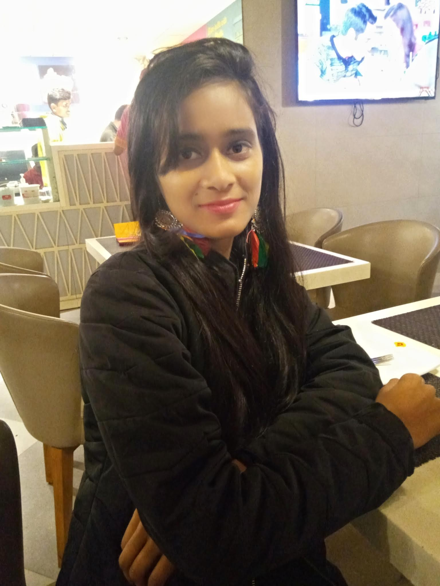
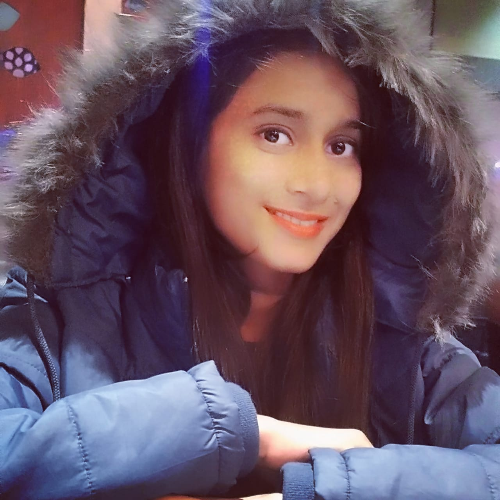
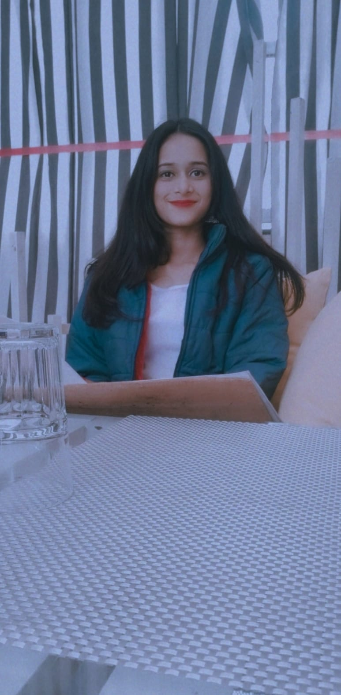
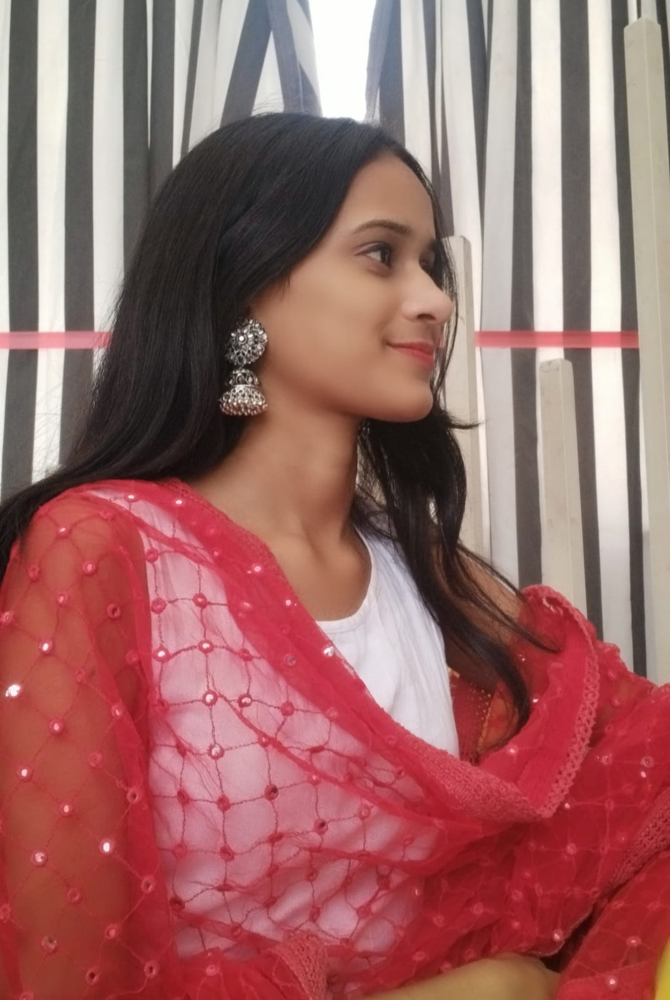
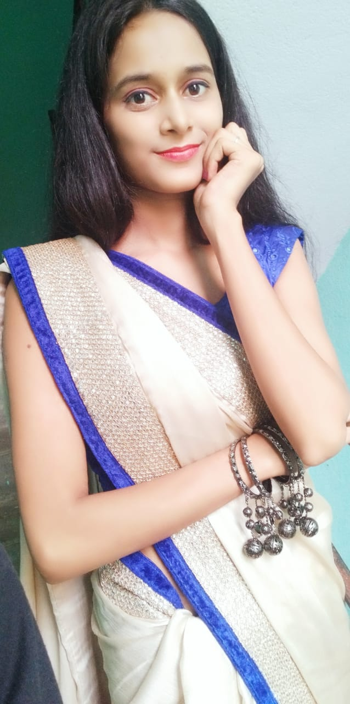
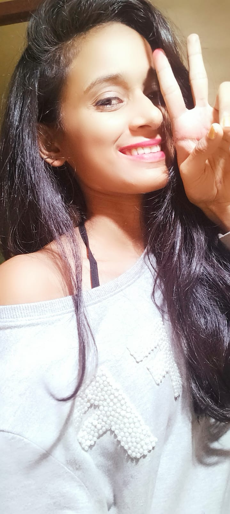
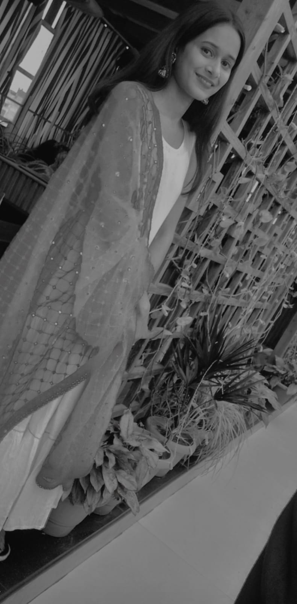

HAPPY BIRTHDAY NEHA
A beautiful Note for my beautiful Jaan
Jaan, I LOVE YOU SO MUCH
I know ki maine aapka bhot dil dukhaya hai, i hurt you a lot and so many time aur aapnee hme har baar maaf kiya hai.
Jaan i want to tell you something from core of my heart
- jaan Doesn't matter mai aapse kitna bhi lar lu pr sachai ye h ki mere itna pyar krne wala aapkko nhi milega
- jaan aap janti nhi ho ki ap mere liye kitni important ho, jb aap hmse baat nhi krti mai kitna akela ho jata hu, kisi se baat krne ka mn nhi krta
- Aap agr mere saath nhi bhi rhiega phir bhi mere dil me aapke liye itna sa bhi pyar km nhi hoga
- jaan hm chahte hai ki hm aapko is duniya ki sari khusiyan de jo aap chahti ho aur jo aap deserve krti ho
- jaan mujhe pta nhi hai ki aap kb tk meri ho lekin mai bs itna chahta hu ki aap jb tk meri ho mai kbhi aapke aankho me aasu na aane doo.aapko is duniya ki sari khusiyaan du jo aap chahti ho
- sonaa, hme bhot ache se pta h ki hm dono ka ek saath shayad koi future nhi hai but jitne din hm hai saath me hm pyar se reh skte hai
KUCH PYARI YAADIEN...
Jaan waise toh hmari achi yaadien se jyada buri yyaadien h but as u know how positive i am so i am sharing some of our beautiful memories with you..
- jaan aapko yaad hai school ka wo annual function jisme aap roj evening me school se ghar jati thi aapko pta h mujhe koi interest nhi tha school ke kisi bhi program me mujhe interest tha toh bs aap me. mai bs aapke liye school me rukta tha and even sachai toh ye hi ki mai school bhi sirf aapke liye aata tha.
-
Aap soch nhi skti mujhe kaisa feel hua tha jb aapne phli baar meri haatho me apna haath tha. wo aapka roz ka auto se hmare saath aana aur jana yaad hai na. qo aapko love letter exchange krna yaad hai na sach khu toh mai apne un dino ko bhot miss krta hu agr mujhe mauka mile toh mai phir se waisi life chahunga
- Sweetheart aapko pta h apne jb hme first time k sir ke coaching pe hug kiya tha us ek hug ke liye jaan bhi deni pre toh km hai
-
jaan aur aapka first kiss hayee kya hi khu is ke bare me kitna khash tha woh
some beautiul photographs of my beautiful jaan..







Some beautiful Quotes from core of my heart
-
I am who I am because of you. You are every reason, every hope, and every dream I’ve ever had.
- I wasn’t expecting you. I did not think that we would end up together. The single most extraordinary thing I have ever done with my life is fall in love with you. I’ve never been seen so completely, loved so passionately and protected so fiercely.
- Words may fail to express how much I love you but my deeds will never fail to show my love for you. I loved you yesterday, love you today, and will love you until there’s no tomorrow!
- Love is not something that you can express in words. Love is something that is expressed by actions and felt with the heart. I don’t know how much loved I make you feel but trust me, dear, you are the most precious thing in my life. I love you!
- when i am with you do you know what happens? Everything seems beautiful.All of mmy sad moments just disappears and i even start laughing on stupid joke. Do you know magic or is it just me who lost in loving you?
- Loving you is like an addiction to me. Every moment I spend loving you is like the moments I spend in heaven. The day I will stop loving you is the day I die. I love you more than myself. keep up that sweet smile on your face always!